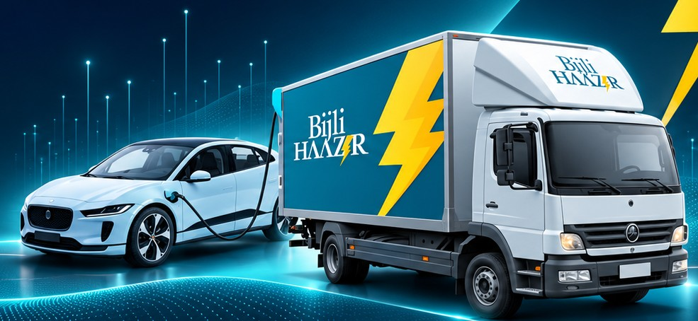

Track simulated energy flow, cost per delivered kWh and climate outcomes across one proposed distributed storage network.
SYNTHETIC DEMO DATA
THE BIJLI HAAZIR THESIS
One energy network. Three delivery modes.
Acquire when economical. Store intelligently. Dispatch to the road, a fixed charging site or an electric rider.
01 / Mobile energy02 / Station BESS03 / Rider swaps

ϟ
SELECTED DEMONSTRATION WINDOW 2026, REPRODUCIBLE
Delivered energy ↗
—
● Dispatchable output
Solar source mix ☼
—
Fraction of input energy
Net contribution / kWh ↗
—
Simulated variable costs
Energy delivery efficiency ◫
—
Delivered ÷ purchased
Service uptime ◷
—
Energy-weighted synthetic value
Peak BESS buffer ϟ
—
Maximum event, not energy
01 / OPERATIONS
Energy contribution & flow
Every unit has a source, a destination and a loss.
Energy acquired by source
Daily synthetic transactions · stacked input kWh
Solar Grid
Energy distribution
Delivered kWh by service
3 SERVICESONE NETWORK
Where energy comes from
Solar + economically purchased grid input
Solar contribution—
Grid contribution—
Total energy in—
Delivered output—
Storage + delivery losses—
Rider exchanges—
Transaction ledger
Inspectable sample records — source-tagged, reproducible, not metered
—
Date
Delivery mode
Solar kWh
Grid kWh
Delivered kWh
Uptime
02 / COMMERCIAL MODEL
Contribution, not just a tariff spread
All prices in Pakistani rupees · adjustable scenarios
Financial waterfall
Illustrative period totals
Gross delivered-energy revenue—
Acquisition cost—
Battery cycling & wear—
Dispatch / logistics—
Operations & site allocation—
Net operational contribution*—
* Excludes major capital recovery, financing, taxes, fixed corporate overhead and any unmodelled fees. No subscriptions are assumed in this ledger.
Scenario assumptions
Change costs and selling tariffs to stress-test viability.
Net contribution per delivered unit—
Illustrative economics only. All legal pathways for sourcing, pricing and selling energy must be established separately.
INVESTOR / JUDGE DISCIPLINE
An energy spread is not a profit margin.
The pitch example: 100 kWh acquired at Rs 40 costs Rs 4,000. If 85 kWh is delivered and sold at Rs 105, sales are Rs 8,925. The Rs 4,925 difference must still cover battery degradation, trucks, chargers, site fees, overhead, taxes and financing. These are assumptions, not customer transactions.
03 / CLIMATE ACCOUNTING
Claim impact you can defend
Operational scenario · not measured pilot data or lifecycle analysis
ESTIMATED NET OPERATIONAL AVOIDANCE
—
Car displacement scenario, not actual project emissions saved
MONITORED DATA REQUIRED BEFORE PUBLIC CLAIMS
Adjust scenario assumptions
Change only what's actually attributable.
0%
100%
100,000 km
Electric miles driven by customers already using EVs are not credited as new avoided petrol use. Grid emissions factor: 0.365 kgCO₂/kWh; gasoline combustion: 2.31 kgCO₂/L.
Carbon accounting bridge
Direct petrol tailpipe reference minus modelled charging emissions
Displaced petrol baseline—
Modelled charging emissions—
Net operational avoidance—
Petrol displaced—
EV delivered energy—
Attributable ICE km—
Electric two-wheeler scenario
20 riders × 40 km/day × 300 days, with verified petrol displacement assumption
Modelled attributable operational avoidance—
Attributable travel—
Excludes battery manufacture, dispatch-truck fuel/electricity, material processing and end-of-life impacts. Emissions estimates should not be marketed as verified credits.
04 / FIELD VALIDATION
What a real pilot must prove
Go / no-go before scale
01 / SOURCE MEASUREMENT—
Record verified solar vs grid kWh at the meter.
02 / ENERGY DELIVERED—
Measure delivered charging energy and losses.
03 / SOLAR ATTRIBUTE—
Confirm source mix by logs, not assumptions.
04 / PEAK BUFFER—
Record actual site power peak reduction.
05 / CONTRIBUTION—
Count transport, site share, cycles and all variable costs.
06 / RELIABILITY & SAFETY—
Track charger uptime, failures and safety incidents.
Stage 1 · Design
0–30 DAYS
One approved energy-replenishment hub
One host DC–DC charging site
One compatible rider-fleet cohort
Electrical design, regulatory and safety assessment
Stage 2 · Integrate
31–60 DAYS
Modular BESS, BMS and DC–DC interface
Energy and battery-state metering
Safe pack-custody process
Software-based dispatch records
Stage 3 · Operate
61–90 DAYS
Host charging trials and rider exchanges
Paid usage, uptime and cost logs
Attributable avoided-emissions estimates
Scale only after technical and economic validation
THE HACKATHON ASK
Help us prove the first energy node.
We seek one host, one compatible rider fleet, a certified BESS/DC-charger integrator, and prototyping / mentoring support. A priced capital ask follows engineering and safety validation.